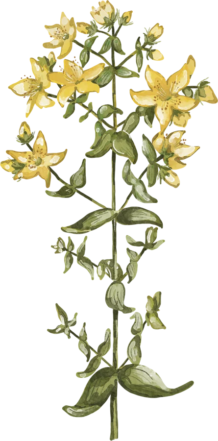
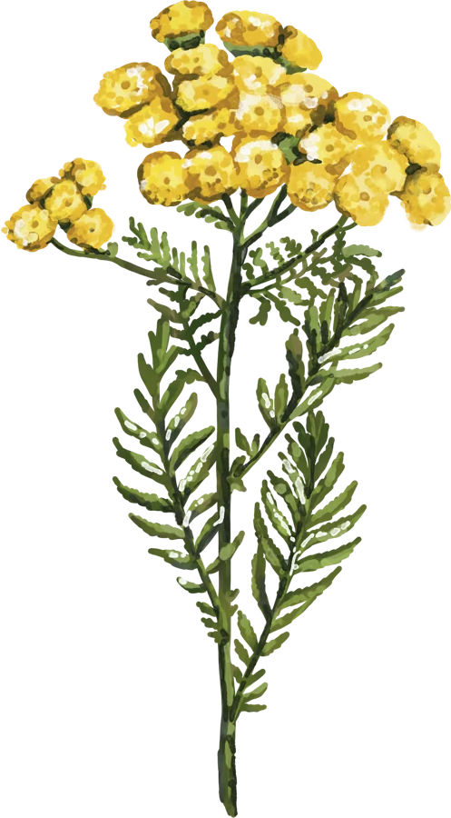
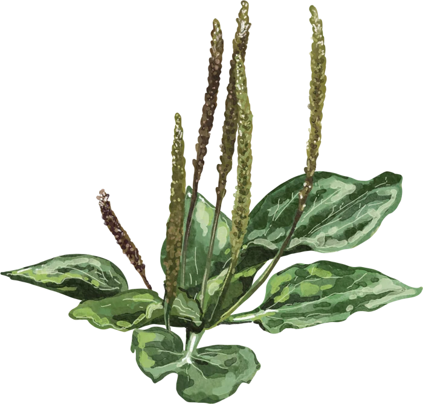
Atrūnit radnīceigūs augus – zeimiejumu i juo nūsaukumu!
Kotrai spēlei ir cyts teirums – 8 augi nu 37.
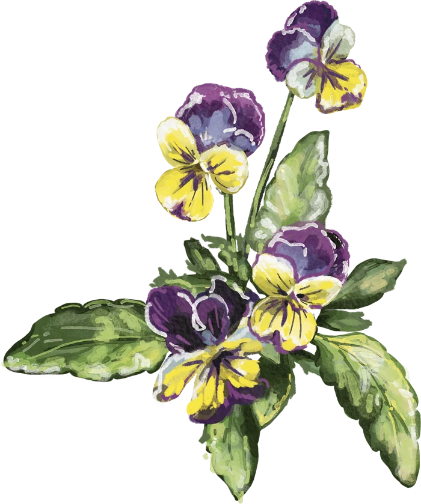
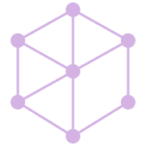
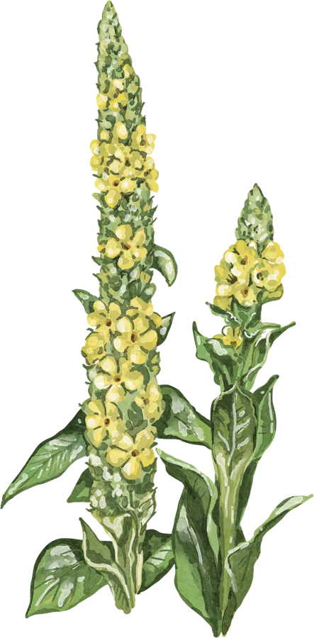
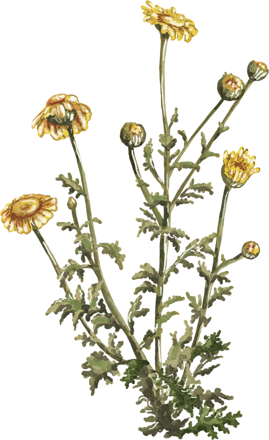
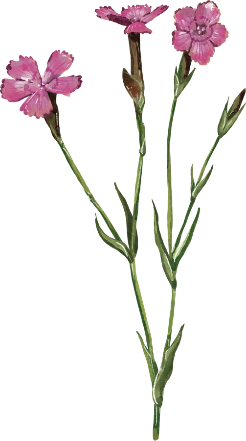
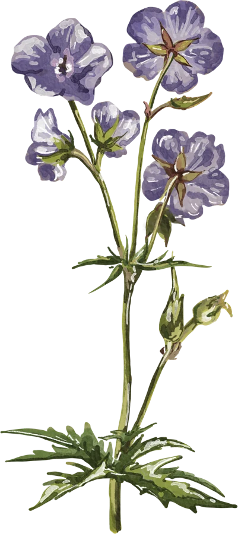
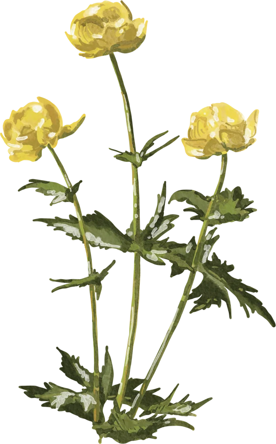
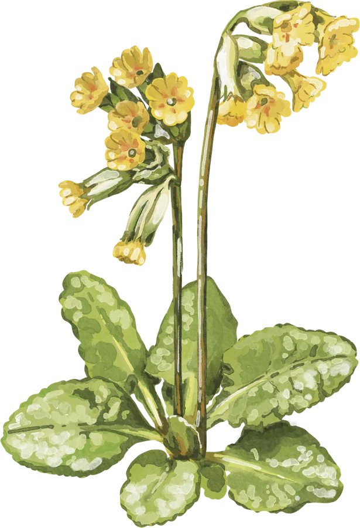
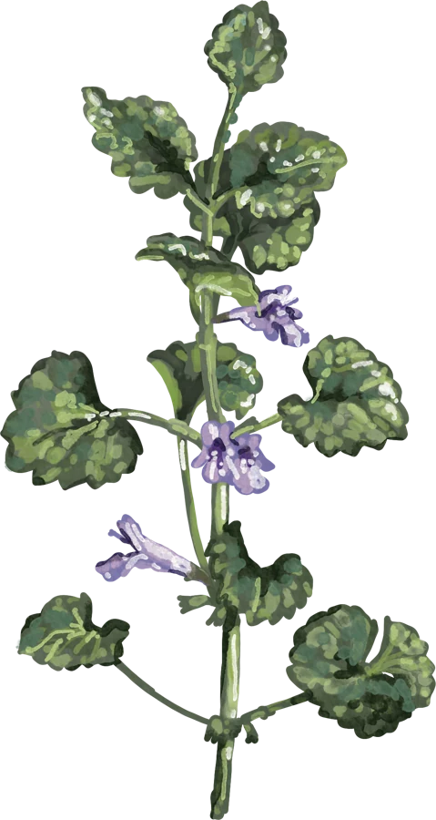
Īpazeiti 8 teiruma augi.
0no 1000 punktiem
ResearchGames.eu · pilots
Atmiņas spēle ar augu zīmējumiem un latgaliskajiem nosaukumiem. Viena pāra kārtī ir zīmējums, otrā – šī auga nosaukums un avotā norādītie varianti.
Izvēlies 6, 8 vai 10 pārus. Katrā spēlē augus izlozē no 37 zīmējumu kolekcijas. Nākamajā spēlē augu izlase mainās. Spēles beigās atveras “Muns teirums” – galerija ar iepazītajiem augiem un iespēju kopēt rezultātu.
Atver divas kārtis. Ja zīmējums un nosaukums atbilst vienam augam, pāris paliek atvērts. Ja nesakrīt, atceries to atrašanās vietu un mēģini vēlreiz.
Ar pulksteņa un zvaigznes ikonām vari neatkarīgi ieslēgt laika un punktu skaitīšanu. Noklusējumā abas iespējas ir ieslēgtas.
Spēle veidota sadarbībā ar latgaliešu kultūras kustību “Volūda”, kas veicina latgaliešu valodas un kultūras attīstību.
Spēle ir iekļauta ResearchGames.eu spēļu kolekcijā un ir atvērtā koda projekts, kas pieejams GitHub.
Līga Romančuka
Topošā grāmata “Augu nosaukumi latgaliešu valodā”, sastādītāja Edeite Laime.Spēlē izmantota nodaļa “Teiruma augi”.Augu nosaukumu secība saglabāta kā avotā.
Lai spēlētu, pārlūkā jāieslēdz JavaScript.